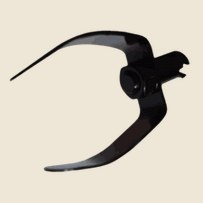

Ponteira cortadora para cabos e varetas, indicada para desobstrução de gordura em esgotos, de 2" a 3.1/2".
A Ponta Cortadora serve tanto para cabos quanto para varetas e é indicada para desobstrução de gordura em redes de esgoto.
Disponível de 2" a 3.1/2" de diâmetro.
Fale direto com a fábrica. Informe a medida e a quantidade que respondemos com valores e condições.
Pedir orçamento no WhatsApp